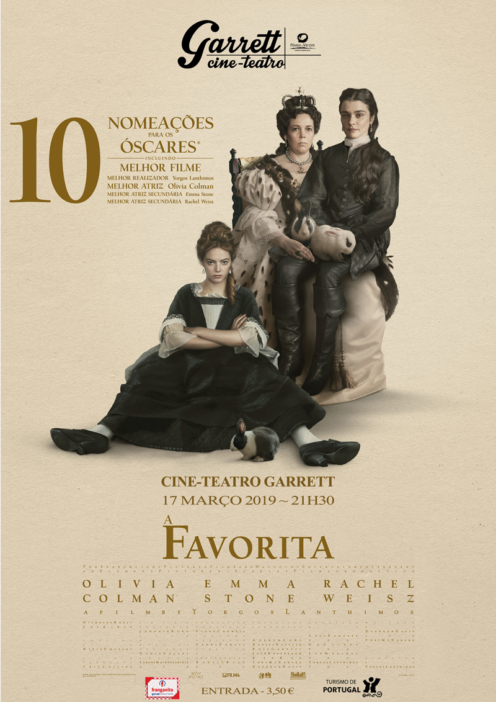

Indicado ao Oscar de Melhor Filme em 2019.

No início do século XVIII, a Inglaterra está em guerra com a França. Enquanto isso, a rainha Anne ocupa o trono, mas sua saúde e sua instabilidade fazem com que sua amiga Lady Sarah Churchill assuma diversas responsabilidades do governo.
A chegada de Abigail, uma jovem que passa a trabalhar no palácio, modifica a relação entre as três mulheres e inicia uma disputa pela atenção e pelo poder.
A Favorita recebeu dez indicações ao Oscar. Olivia Colman venceu o prêmio de Melhor Atriz por sua interpretação da rainha Anne.